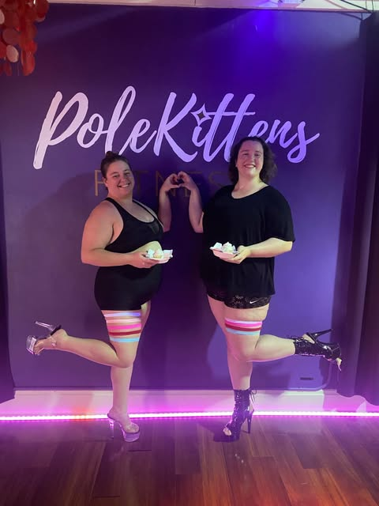
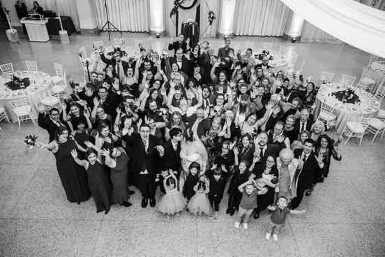

Music

Emily and her parents outside of the recital hall after her senior recital
I started singing as soon as I started speaking, and I haven't stopped. I joined my first choir at age eleven, I pursued my bachelor's degree in music from Capital University as a young woman, and I now serve as the soprano section leader at St. Paul's Episcopal Church in Oakwood.
Pole Fitness
Emily and her friend Alex posing with graduation cupcakes at their pole studio
I began poling one weekend after my wedding two years ago, and I am in love! I have never been more confident, more willing to take risks, or more physically strong. I owe so much of the woman I am today to the woman who took the plunge to try a new (more fun) exercise program!
Theme Parks

Emily's reaction to seeing Diagon Alley at Universal Orlando for the first time
Something you may not know about me is that I have a condition called aphantasia, which means I can't picture things in my head. I think that's why theme parks capture me the way they do. I love stepping into an alternate land of imagination so that I can see what everyone else can if they just close their eyes. Of course, I do enjoy a good ride, but it's the fully immersive experiences that draw me in and capture my heart.
Family
Emily and her husband Chris at their wedding, surrounded by all their favorite people
Maybe it's cheating to say that my "interest" is my family, but that doesn't make it any less true. I really have saved the best for last. Whether it's spending the day being silly with my nieces, taking my sister to Ulta, visiting my Dad and family in Boston, Sunday lunch with my mom, or just spending a lazy day with my husband Chris, it's always time well spent.